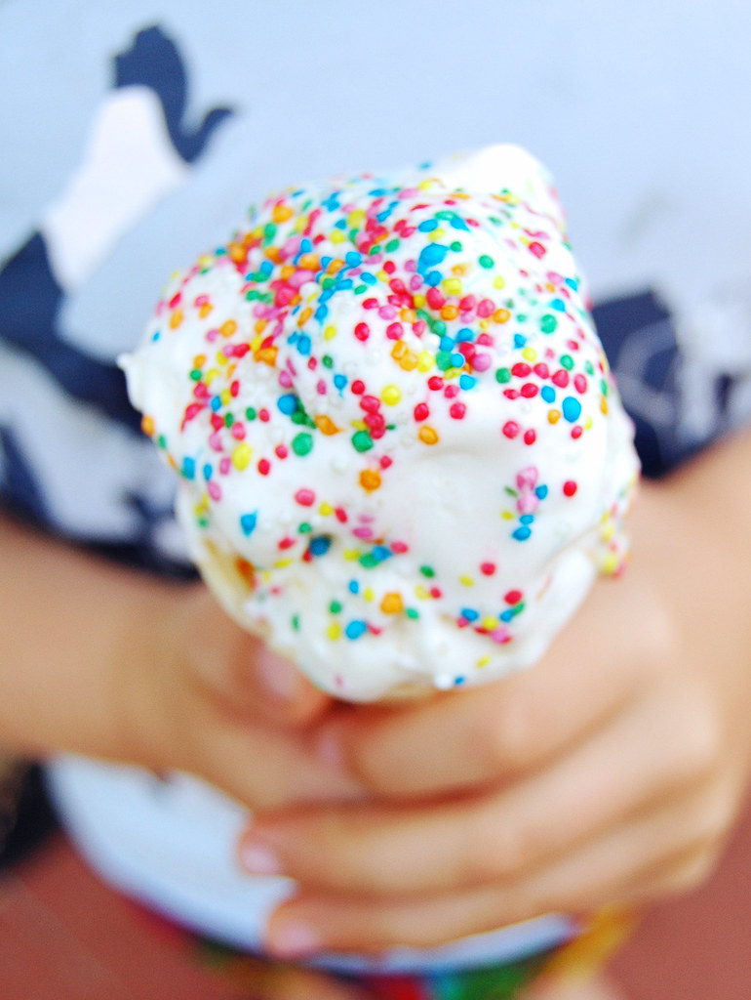

My Favorite Things

My Favorite Foods
- Pizza
- Ice cream
- Steak
- Seafood
- Hamburgers
My Favorite Sports
- Baseball
- Football
- Basketball
- Golf
My Favorite Animals
- Dogs
- Cats
- Deer
- Bear
- Squirrels
My Favorite Activites
- Hunting
- Fishing
- Working on Trucks
- Sleeping
- Eating